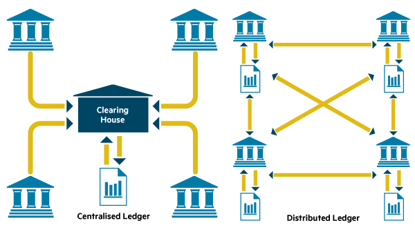

Blockchain¶
What is blockchain ？¶
Blockchain is a decentralized distributed ledger system, used to maintain a record growing block by block. Each block contains a timestamp and a link to the previous block. The blockchain is managed by a peer to peer network and all of the network nodes comply with one protocol for verifying new blocks. In design, the blockchain itself resists the modification of data. Once the data is recorded in the blockchain, it cannot be changed unless the subsequent blocks are changed and most of network nodes are collusion. In function, blockchain can be used as an open distributed ledger, which can record transactions which can be verified and kept permanently between parties.
The concept of blockchain was proposed in 2008 “bitcoin White Paper” by Nakamoto Satoshi. And in 2009, Bitcoin, a digital currency, was created based on blockchain concept. Bitcoin is the first digital currency that successfully solved the Double-spending problem without a central authority or a central server. In addition, blockchain can also be used to register and distribute digital assets, title certificates, points, etc., and transfer, pay, and trade in a peer to peer manner. Compared with the traditional centralized ledger system, the blockchain system has the advantage of full disclosure, non-discrimination, prevention of Double-spending，and it does not depend on any trusted third party.
Smart Contract¶
A smart contract is a computer protocol intended to digitally facilitate, verify, or enforce the negotiation or performance of a contract, first proposed by Nick Szabo in 1994.
A smart contract is a trading agreement that can enforce the terms of the contract by executing computer program. It is not only a computer program that can be executed automatically, but also a system participant that can respond to received information, accept and store value, and send out information and value. This smart program is just like a person who can be trusted to keep assets temporarily, and always follow the rules specified in advance.
A smart contract model: A piece of code(smart contract), deployed on a shared, replicable ledger, can maintain its own state, control its own assets, and respond to received external information or assets.
Smart contracts are common used in financial area. Each type of financial contract can be written by program code as a smart contract, such as CFDs, token system, digital wallet, insurance, etc.
Consensus¶
Wikipedia defines consensus as a group decision-making process in which group members develop, and agree to support a decision in the best interest of the whole.
In blockchain, consensus is reached by all the distributing nodes in the blockchain network. First, there is one node making a proposal that which transaction information should put into the block, then broadcasting to other nodes. Other nodes need to decide whether to record these information into the block. In other words, all nodes validate the information to be appended to the blockchain. Moreover, once added into the blockchain, a record cannot be modified and it is very difficult to falsify entries. In this process, a consensus protocol ensures that the nodes agree on a unique order in which entries are appended. There are mainly two types of consensus protocol: the first type is Byzantine fault non-tolerant algorithm，including Paxos、Raft、etc.; the second type is Byzantine fault tolerant algorithm, including PBFT, POW, etc..From the probabilistic perspective, the PBFT-series algorithms are deterministic and cannot be reversible once the consensus is reached; while PoW-series algorithms are indefinite, but as time goes on, the probability of being overturned is getting smaller and smaller.
The traditional distributed consistency algorithm uses one-node-one-vote and minority-subordination-majority method. This method can be used in the permissioned blockchain because nodes need to be authenticated to join the network and issue transactions. But in permissonless blockchains like Bitcoin and Ethereum, anyone can be a user or run a node, can participate in the consensus process for determining the “valid” state. If one-node-one-vote method is adopted in permissionless blockchains, the blockchains will be very vulnerable to sybil attacks: attackers mass-produce a large number of nodes to join the network and initiate attacks through an absolute majority of voting rights. For one node, it is impossible to distinguish whether the other node is an normal node or a malicious node.
In order to avoid sybil attack, PoW and PoS are common used in permissionless blockchain. In the PoW algorithm, to add blocks to the blockchain, each node has to show the proof that it has performed some amount of work. The proof should be able to quickly verified and the work can be easily measured. This process, called mining, requires immense amount of energy and computational usage, so only if the node abide by the agreement, it can claim the mining reward. Proof-of-Stake algorithms are designed to overcome the disadvantages of PoW algorithms in terms of the high electricity consumption involved in mining operations. Instead of buying mining equipment to engage in PoW algorithm and winning a mining reward, with PoS a user can buy tokens and use it as stake to buy proportionate block creation chances in the blockchain system by becoming a validator. The tokens in the PoS are similar to the company's equity. Large shareholders have greater say in the system, have more responsibilities, and gain more.
Permissionless blockchain¶
A permissionless blockchain is a blockchain that anyone in the world can read, anyone in the world can send transactions to and expect to see them included if they are valid, and anyone in the world can participate in the consensus process – the process for determining what blocks get added to the chain and what the current state is. As a substitute for centralized or quasi-centralized trust, public blockchains are secured by cryptoeconomics – the combination of economic incentives and cryptographic verification using mechanisms such as proof of work or proof of stake, following a general principle that the degree to which someone can have an influence in the consensus process is proportional to the quantity of economic resources that they can bring to bear.
Three characteristics of permissionless blockchain: (1) Anyone can download the code and start running a public node on their local device, validating transactions in the network, thus participating in the consensus process – the process for determining what blocks get added to the chain and what the current state is. (2) Anyone in the world can send transactions through the network and expect to see them included in the blockchain if they are valid. (3) Anyone can read transaction on the public block explorer. Transactions are transparent, but anonymous/pseudonumous.
Permissioned blockchain¶
A permissioned blockchain network requires an invitation and must be validated by either the network starter or by a set of rules put in place by the network starter. The read rights of a permissioned blockchain could vary: anyone who want to read; only the participants; or a hybrid route(For example, open the root hash of blocks and API to public which allows outside to make limited queries). According to different ownership of the nodes, permission blockchain can be divided into consortium blockchain and private blockchain. In consortium blockchains, members of a consortium or stakeholders in a given business context operate a permissioned blockchain network, while private blockchain is operated by one entity, i.e., within one single trust domain.
Four characteristics of the permissioned blockchain: First, participants need to obtain an invitation or permission to join; second, in the permissioned blockchain, enterprise users can build a better coordination mechanism and efficiently conduct intervention measures while the permissionless blockchain is high decentralized which lack of effective coordination and intervention measures. Third, the access mechanism of the permissioned blockchain avoid the sybil attacks, so traditional consensus algorithms can be used, which can make a qualitative leap in transaction processing latency and throughput. Fourth is about privacy. Enterprise applications can be provided with a feasible privacy technology solution in permission blockchain.
Application¶
Blockchain, the technology behind Bitcoin and cryptocurrencies, is expanding among governments and enterprises all over the world. From financial areas, such as securities transaction settlement and accounting audit, to public areas such as government, medical care, and credit information systems, blockchain technology is advancing at an exponential pace.
While the traditional industry continue to suffer from the inefficiencies of a centralized architecture which results in higher fees, lower security and less efficiency, blockchain, especially the permissioned blockchain has proved itself as a viable technology to decentralize every industry, resulting in micro fees, state-of-the-art security and lightning efficiency.
Taking clearing and payment as an example, in the process of a standard inter-bank money transfer, if the issuing bank and the receiving bank do not open an account with each other, they will have to rely on a central clearing department or an associated bank. From implementation to settlement, the payment workflow takes several days, and the intermediary also charges a fee.
However, the blockchain technology enables peer-to-peer transactions and share transaction data with the entire network. This can effectively improve the payment and settlement efficiency and reduce transaction costs. By decentralizing the ledger instead of the central authority to verify the ownership of the assets, the agencies operate and inspect together to prevent fraud and human manipulation.

In addition to payment settlement, blockchain technology can also be applied to other banking businesses: bills and supply chain finance areas, as well as risk management areas such as "know your customers (KYC)" and "anti-money laundering (AML)".
In securities market, including securities issuance and trading, clearing and settlement, and shareholder voting, seamless integration with blockchain technology can be achieved. In the insurance industry, insurance operators can also apply blockchain technology to solve credit problems by recording credit on the public network and accept supervision from the entire network. The function of time stamping guarantees that all transaction records cannot be changed. This greatly reduces management costs and is more likely to return to the original intention of mutual insurance. In accounting and auditing field, the blockchain system can meet the stakeholders' objective requirements for independent auditing and the professional ethics requirements for auditing work. It can be applied to the audit industry and can promote more transparent and efficient audit work.
In addition, in the fields of credit information, medical treatment, notarization, energy, etc., blockchains also have rich application scenarios, which are not introduced here.